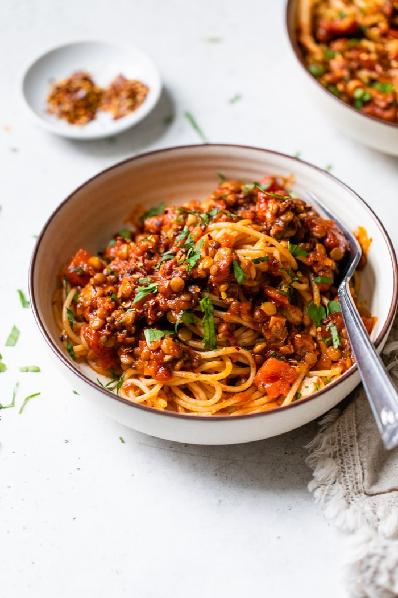

Lentil Bolognese

Description
A lot of the magic in a vegan kitchen happens in the pantry, and this Lentil Bolognese is a prime example. It’s a comforting, tasty meal made exclusively with budget-friendly, shelf-stable ingredients. In fact, many of my favorite pastas are made with pantry ingredients but they never sacrifice on flavor (think vegan caramelized onion pasta, Italian white bean and pasta stew, or creamy pantry pasta).
I used to enjoy a good bolognese (a lot), but after going vegan, the plant-based bolognese recipes I tried fell flat (or terribly). They mostly tasted like vegetables in marinara sauce.
Ingredients
- 1 tablespoon olive oil, or to taste
- 1 onion, finely chopped
- 2 cloves garlic, crushed and finely chopped
- ½ red bell pepper, thinly sliced
- 1 carrot, cut into small cubes
- ½ cup thinly sliced mushrooms
- ½ cup red wine
- 1 (14 ounce) can diced tomatoes
- 1 cup vegetable broth
- 1 (15 ounce) can green lentils, drained
- 1 teaspoon ground paprika, or more to taste
- 1 teaspoon dried basil, or more to taste
- 1 teaspoon dried oregano, or more to taste
- 1 teaspoon mixed dried herbs, or to taste
- 1 pinch ground nutmeg
Steps
- Heat olive oil in a large pot over medium heat. Cook and stir onion and garlic until soft, about 5 minutes. Stir in red bell pepper and carrot; cook for 4 to 5 minutes. Add mushrooms; cook and stir until softened, about 2 minutes.
- Pour wine into the pot; simmer until slightly reduced, about 1 minute. Stir in diced tomatoes and vegetable broth. Bring sauce to a boil; reduce heat and simmer until flavors combine, 10 to 15 minutes. Stir in lentils, paprika, basil, oregano, dried herbs, and nutmeg; cook until lentils are heated through, about 5 minutes.